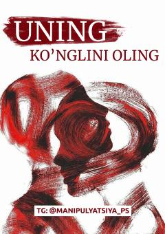

UKErkaklar psixologiyasi va ular bilan to'g'ri munosabatlar o'rnatish sirlari.
Ushbu qo'llanma erkaklarning ko'nglini olish, yigitlar e'tiborini jalb qilish va ular bilan sog'lom munosabatlar o'rnatish sirlarini ochib beradi. Kitobda ayollar va erkaklar o'rtasidagi muloqot psixologiyasi hamda amaliy maslahatlar muhokama qilinadi.